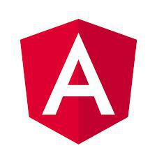
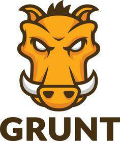

ELECTRON
Build cross platform desktop apps
Biz Application 개발팀 박관후 / ghpark@daou.co.kr
1.Javascript Is Eating The World
- 
- 
CSS Framework
- 960 Grid System
- Blueprint
- Elastic CSS Framework
- YUI Grid CSS
- Less Framework
CSS pre-processor
- SASS
- Less
- Stylus
- Myth
- Rework
- DtCSS
- Switch CSS
2.Less

왜 LESS를 사용하나?
- 시간 절약
- 실수 줄이기
- 더 조직적으로
- 생각보다 쓰기 쉽다.
- 반복 줄이기(DRY)
LESS로 무엇을 할수있나?
- 변수
- Mixins:재사용 함수
- DOM과 유사한 nesting
- 수학적 연산자:floor(),ceilling(),round()
- 컬러 연산자:darken(),lighten(),fadein()
변수
@로 시작, 문자나 사이즈를 저장
@default:#f3f3f3
footer { color : @default }

footer { color : #f3f3f3 }Mixins
코드 재사용
.border-radius(@radius:2px){
border-radius:@radius;
}
@gray: #333;
header > nav {
border : 1px solid @gray;
.border-radius;
}
aside > nav {
.border-radius(5px)
}

header > nav {
border : 1px solid #333;
border-radius: 2px;
}
aside > nav {
border-radius: 5px;
}
Cascading + Nesting
DOM구조와 유사
header {
color: white;
.logo{
width:300px;
float:left;
}
#search {
width:300px;
float:right;
input {
width:250px;
color:#000;
}
}
}
header {
color: white;
}
header .logo{
width:300px;
float:left;
}
header #search{
width:300px;
float:right;
}
header #search input{
width:250px;
color:#000;
}
& 연결자(combinator)
&연결자가 쓰이면 부모셀렉터와 같은 레벨로 해석
@gray: #333;
img {
border:none;
&:focus {
border:1px solid @gray;
}
&.inline {
display:inline;
}
}
img {
border:none;
}
img:foucs {
border:1px solid #333;
}
img.inlne {
display:inline;
}
그 외
- 연산자 : padding: @padding * 10 >> padding: 20px
- 컬러함수 : darken(@color, 20%) >> 20%어둡게 한다.
- @import "normalize";
3.적용
어디다 쓰지?
Daou Office
기존 CSS를 LESS형태로 변환
*go_header*/
/*GNB*/
.go_wrap header.go_header h1 {line-height:39px}
.go_wrap header.go_header {border-bottom: none} /*height:40px*/
.go_wrap header.go_header nav ul li:hover {background-color: #d23428!important}/*medium dark*/
.go_wrap header.go_header_2row nav ul li.on,
.go_wrap header.go_header_2row nav ul li.on ul li ,
.go_wrap header.go_header_2row .my_info ul.ctrl li:hover,
.go_wrap header.go_header_2row .my_info ul.ctrl li.on ,
.go_wrap header.go_header_2row nav ul li.on_layer,
.go_wrap header.go_header_2row .gnb_top_menu {background-color: #bc2f25!important}/*dark*/
.go_wrap header.go_header ,
.go_wrap header.go_header nav ul li ul li:hover {background-color: #dd372b ;}/*default*/
@default: #dd372b;
@deepDark : #a3241b;
@dark : #bc2f25;
@mideumDark : #d23428;
@mideum : #ea857d;
@mediumLight : #f9e5e4;
@light : #fceeed;
.go_intro_wrap{
.go_header{
background:none!important
}
}
.login_box {
a.btn_login {
background:@default /*default*/
}
a.btn_login:hover {
background-color:@dark;
color:#fff;
}
}
컴파일을 자동화 해볼까?
org.lesscss
lesscss
1.7.0.1.1
LessCompiler lessCompiler = new LessCompiler();
lessCompiler.compile(new File(cssPath+"less/go_color.less"), new File(cssPath+"go_theme_color.css"));
색상을 고를수 있으면 더 좋지 않을까?
@default:#fbd5b5;
@deepDark:#c0c2a5;
@dark:#dacdaf;
@mideumDark:#f0d2b2;
@mideum:#1092307;
@mediumLight:#117836e;
@light:#11b8d77;@import url("config.less");
.go_intro_wrap{
.go_header{
background:none!important;
}
}적용